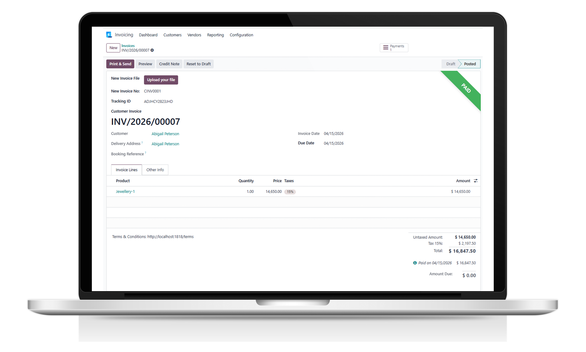

RISHVI LTD
Official Odoo & Linnworks Integration Experts
Official Odoo & Linnworks Integration Experts
Seamless bi-directional integration between Odoo and Xero using OAuth 2.0 REST API
The Rishvi Odoo Xero Connector provides a powerful, fully automated integration between your Odoo ERP and Xero accounting platform. Synchronise your financial data in real time — eliminating manual data entry, reducing errors, and keeping both systems perfectly aligned at all times.
Whether you need to import accounts, products, contacts, invoices, or vendor bills — or export sales orders, payments, and journal entries — this connector handles it all bi-directionally with a single click or automated scheduler.
Built for businesses of all sizes running Odoo Community, Enterprise, Odoo.sh, or self-hosted environments, the Rishvi Xero Connector is the most comprehensive Odoo–Xero integration available on the Odoo Apps Store.

Projects

Clients

Years Industry Expertise

Odoo Engineers

Presence Locations

Customer Success Ratio

The Rishvi Xero Connector provides a structured, reliable approach to synchronise financial data between Odoo and Xero — in both directions, with full audit control and scheduler support.
Import your full chart of accounts from Xero into Odoo or export Odoo accounts to Xero. Keep your financial structure perfectly mirrored across both platforms without manual duplication.
Synchronise products, customers, and vendors between Odoo and Xero instantly. Avoid data duplication and ensure consistent master data across your entire accounting and ERP workflow.
Import and export customer invoices, vendor bills, credit notes, and refunds between Odoo and Xero. Supports draft and approved statuses so your approval workflow stays intact.
Sync customer and vendor payments in both directions. Import and export manual journal entries to keep your ledgers aligned without any manual reconciliation effort.
Import and export sales orders and purchase orders between Odoo and Xero. Automate order synchronisation using built-in schedulers so nothing slips through the cracks.
The Rishvi Odoo Xero Connector is built to eliminate the friction between your ERP and accounting platforms. We deliver a fully managed integration setup, configured to your business requirements — with ongoing support from our experienced Odoo engineering team.
Our solution covers the complete data lifecycle: from initial OAuth 2.0 authentication and configuration, through to automated scheduled syncs and real-time single-record exports. Every feature is designed to save your team hours of manual work while keeping your financial data accurate and up to date across both systems.

The Rishvi Xero Connector provides a complete set of import and export features — covering every key financial entity in both Odoo and Xero, with flexible configuration options to match your workflow.
 Date-Based Import/Export: Filter and sync records by date range for precise, incremental data transfers between Xero and Odoo
Date-Based Import/Export: Filter and sync records by date range for precise, incremental data transfers between Xero and Odoo
 Tax Synchronisation: Import and export tax configurations between Xero and Odoo, supporting multi-country tax structures
Tax Synchronisation: Import and export tax configurations between Xero and Odoo, supporting multi-country tax structures
 Analytic Accounts & Tracking: Sync analytic account groups and Xero tracking categories for detailed financial reporting
Analytic Accounts & Tracking: Sync analytic account groups and Xero tracking categories for detailed financial reporting
 Inventory Updates: Automatically update quantity on hand in Xero using Odoo vendor bills and invoices
Inventory Updates: Automatically update quantity on hand in Xero using Odoo vendor bills and invoices
 Prepayments & Overpayments: Import Xero prepayments and overpayments directly into Odoo for accurate liability tracking
Prepayments & Overpayments: Import Xero prepayments and overpayments directly into Odoo for accurate liability tracking
 Automated Schedulers: Set up cron jobs to automatically sync sales orders, purchase orders, invoices, bills, and payments on a schedule
Automated Schedulers: Set up cron jobs to automatically sync sales orders, purchase orders, invoices, bills, and payments on a schedule
 One-Place Import: Centralised import panel to pull all data types from Xero into Odoo from a single, organised interface
One-Place Import: Centralised import panel to pull all data types from Xero into Odoo from a single, organised interface
 Single Sync Button: Export any individual record to Xero instantly from its Odoo form view — no need to run a full batch sync
Currency Import: Import currency definitions from Xero to Odoo, keeping multi-currency financial data consistent across platforms
Single Sync Button: Export any individual record to Xero instantly from its Odoo form view — no need to run a full batch sync
Currency Import: Import currency definitions from Xero to Odoo, keeping multi-currency financial data consistent across platforms
 Xero Error Logs: Full error logging for every sync operation — quickly identify and resolve any data transfer issues with detailed log records
Xero Error Logs: Full error logging for every sync operation — quickly identify and resolve any data transfer issues with detailed log records
See the Rishvi Odoo Xero Connector in action — from OAuth 2.0 authentication setup through to live bi-directional data sync. The demo walks you through the complete workflow including credentials configuration, importing accounts and contacts from Xero, exporting invoices and payments from Odoo, and using the automated scheduler for hands-free synchronisation.
It highlights key features including the centralised import panel, per-record sync button, Xero error logs, and the live dashboard displaying purchase orders, sales orders, invoices, and bills — giving your team full visibility over the integration at all times.
Run multiple Odoo companies each linked to their own Xero account. Company-specific access and data mapping ensure records are always assigned to the correct entity.
Choose to export invoices and vendor bills with or without product lines. Export invoices in draft or approved status to Xero — giving you full control over your workflow.
Secure, modern authentication using Xero's OAuth 2.0 standard. Supports both manual authentication and automated authentication flows — compatible with Odoo.sh, Enterprise, Community, and self-hosted.
The Rishvi Xero Connector includes a built-in dashboard giving your finance team a real-time overview of all integration activity. Monitor synced records, track pending operations, and review the status of invoices, bills, orders, and payments at a glance.
Key Highlights:
Stop wasting time on manual data entry between Odoo and Xero. The Rishvi Odoo Xero Connector automates your entire financial data workflow — from accounts and contacts through to invoices, payments, and journal entries — keeping both platforms perfectly in sync.
With OAuth 2.0 security, automated schedulers, multi-company support, and a built-in dashboard, you get enterprise-grade integration at a fraction of the cost of custom development. Our team of Odoo experts handles setup, configuration, and ongoing support so you can focus on running your business.
Get in touch today to arrange a free demo and see how the Rishvi Xero Connector can transform your accounting workflow.
© 2026 Rishvi LTD. Your Partner in Odoo Excellence.